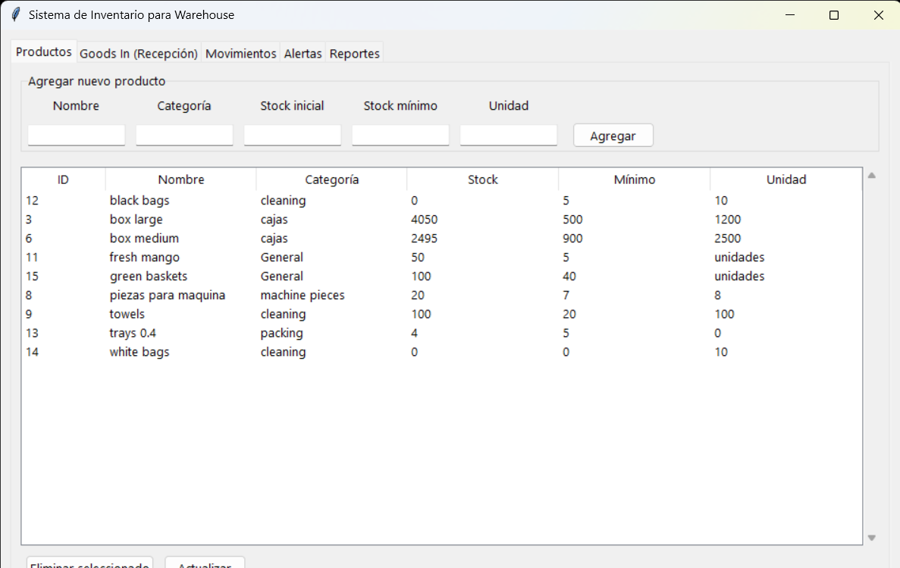

SOFTWARE DEVELOPMENT / DATABASE
A Python and SQLite inventory management system inspired by real warehouse operations, designed to manage products, stock movements, goods receiving and inventory reports.
This project was created as a practical software development exercise based on warehouse inventory operations.
The system manages inventory data through a SQLite database and provides both a command-line interface and a desktop graphical interface built with Tkinter.
The project focuses on applying Python programming and SQL concepts to a realistic business problem.
The application provides a graphical interface for managing products, stock levels and warehouse operations.

Create, update, delete and query products while maintaining stock information.
Register incoming stock and maintain receiving records for warehouse operations.
Track incoming and outgoing inventory movements and maintain movement history.
Identify products that have reached or fallen below their minimum stock level.
Generate inventory information and analyse stock data using SQL queries.
The application follows a modular structure where each Python module is responsible for a specific part of the inventory system.
The project was also used to practice relational database design and SQL operations.
Stock movements use database transactions so that failed operations do not leave the inventory in an inconsistent state.
SQL parameters are also used when interacting with the database, helping prevent SQL injection.
The complete source code and project documentation are available on GitHub.
View on GitHub →